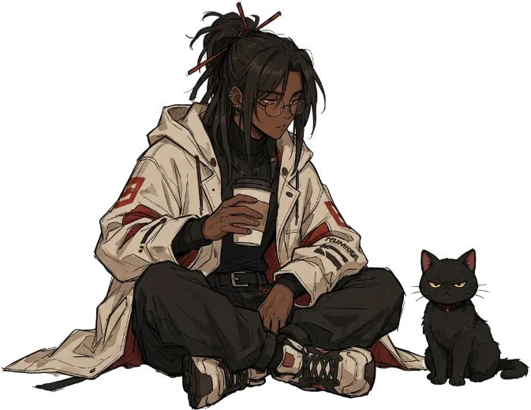
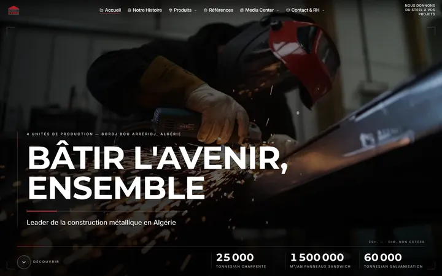
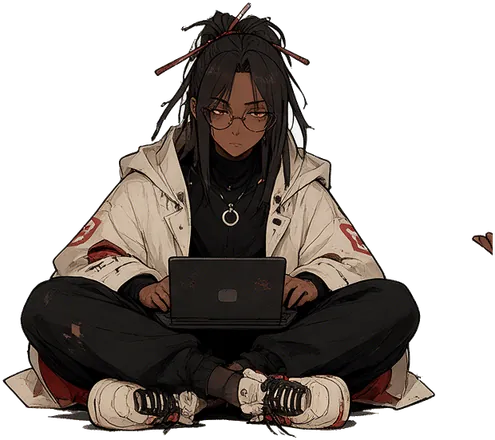
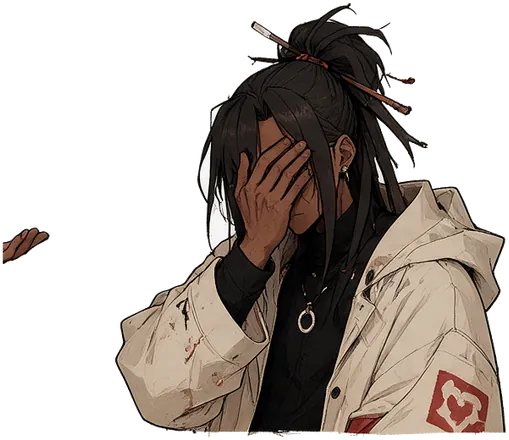
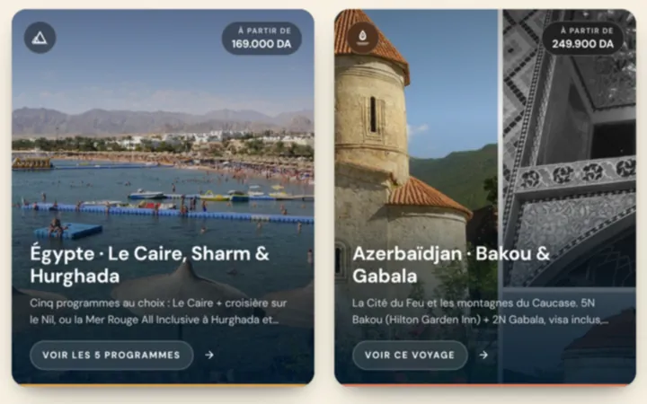
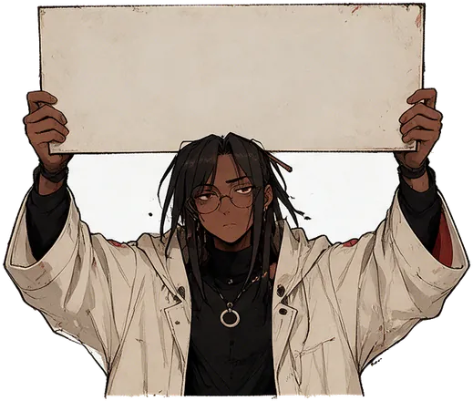

Cover
Draft 0.1 · for reviewNUMIDEA
Brand identity · for motion & video
Rooted in Numidia · built on ideas.
The rulebook for every frame we publish: who we are, how we sound, and how the identity moves on screen.

Read this first
How to read the status tagsOne house. Every frame.
This draft turns the shipped site and its design system into rules a video editor can follow without a call. Where the source already decides something, the decision is copied, not reinterpreted. Where video needs a decision the source never made, it is marked as a proposal.
Read from the repository or the design system. Binding.
New for video. Needs sign-off before first use.
Who we are
ShippedSmall enough to care. Senior enough to ship.
A web studio in Bordj Bou Arréridj, Algeria. One founder designs, codes and delivers; freelancers join when a project asks for it. Between the client and the person writing the code there is no middleman.
You talk to the builder.
Design → code → deploy, owned end to end.
Sunday to Thursday, 9am–6pm.
What we sell
ShippedWhat we make real.
Showcase sites, e-commerce and custom web apps, from front-end to cloud.
Scrapers, lead pipelines, internal tools: the repetitive work disappears.
Identity, visual system, motion: a brand people recognise without reading the name.
Market audits, funnel analysis, competitive intel, before a single line of code.
The Preview.
A real working demo before any payment. We build your new site’s homepage with your own content. If you say no, you owe nothing.
Free, no obligation · registered businesses only · at most 4 Previews a month. In video, the Preview is the hero offer: every studio film ends on it or on the contact line (proposed).
Voice
ShippedReceipts, never boasting.
Confident, calm, precise. Warm at the human edges, never chummy. “We” is the studio and “you” is the client, and the client’s outcome is the subject.
The three registers never mix. Em dashes and middle dots (·) carry the heavy punctuation.
Lines already on the site · write in this key
Small enough to care. Senior enough to ship.
Your logo is not your brand.
A real demo. Before you pay.
Rooted in Numidia · built on ideas.
- Lead with the outcome.
- Prove it with a fact.
- One flourish per screen.
Writing for screen
ProposedOne idea per beat.
The site’s rules, made strict for a moving frame. Viewers can’t scroll back, so every card has to make sense on its own and stay up long enough to read.
| Do | Don’t |
|---|---|
| “Let’s build it.” · “See the proof.” | “Learn more.” · “Click here.” |
| “Reply the next working day” | “Hundreds of happy clients.” |
| A project not live is labelled SOON | Showing a demo or mock-up as shipped work |
| Voice-over says “we” and puts the client’s outcome first | Talking up how clever the studio is |
| No emoji. Marks allowed: ★ ◆ ↗ ↓ + · // | Stickers, emoji, meme captions |
The name, set in type
ShippedNUMIDEA
Clear space = cap height on every side
There is no logo. The name is the mark.
- The site sets the brand as live type. Never trace, outline or redraw it. Render it from the fonts.
- Always left to right, even inside Arabic frames.
- Minimum 48 px tall in a 1080p frame.
- On void or navy only. Never on a photo or screenshot.
- The cursor is the one animated part.
Colour
Shipped · ArcanumRationing is the whole system.
Arcane blue is energy: live state, links, one word. Brass is the shout: the CTA, the signature, the kicker. Everything else is ink on ground.
Screen area per frame (proposed): about 78 % ground, 16 % ink, 4 % arcane, 2 % brass. Legacy token names: --crimson is the brass, --teal is the arcane blue.
Typography
Shipped · scale proposedDeco · Cinzel — identity + headings
What we make real.
Body · Geist — everything readable
One person scopes, builds and ships your project, and answers when it breaks.
Mono · Geist Mono — the engineered register
SYSTEM ONLINE · 0 DEPENDENCIES · 18S DEPLOY
Arabic · IBM Plex Sans Arabic — leading 1.3
Every Arabic master is set in Plex, mirrored right to left, with the same hierarchy as the Latin one.
About a third of all visible text is mono. Cinzel is LTR only and has no Arabic, so Arabic headings switch to Plex.
| Role | 16:9 | 9:16 |
|---|---|---|
| Display · Cinzel | 128 | 104 |
| Headline · Cinzel | 84 | 72 |
| Lede · Geist | 44 | 48 |
| Caption · Geist 500 | 40 | 46 |
| Label · Mono .2em | 26 | 30 |
| Floor · anything | 24 | 28 |
Graphic language
ShippedHairlines, chamfers, drawn geometry.
Hand-drawn, 1.5 stroke, round caps, no fill. In video they draw on stroke by stroke, never pop in. No stock icons, no icon fonts.
Ring, triangle, cross and dot drift slowly (spin 71 s, bob 14 s) around the type, never behind a headline or a CTA.
Corners are 4 / 8 / 14 / 22. The pill is a chamfer, not a capsule. Every border is a 1 px hairline.
A ring plus a bloom, never a soft drop shadow. Brass glow goes on the one CTA, arcane glow on focus or live state.
Stacked layers: slow aurora fields, a hex or drafting-grid texture, then line art. No photography, no stock illustration, no gradient washes.
Imagery
Shipped
Real screens, kept flat.
- Only real client screenshots, captured at 1280×800.
- Never rotated, mock-3D’d or put under a simulated light. Any depth around them is drawn as line art.
- Cool and neutral. No grade, and no grain over a screen.
- Move between screens with a wipe, never a cross-fade.
- A site that isn’t live gets the drawn hex cover and a SOON label.
- The founder appears as an illustrated character, not a photo, and a generated face never stands in for a person.
Motion
Shipped valuesOne curve. Nothing bounces.
cubic-bezier(.16, 1, .3, 1)
A fast start and a long, unhurried settle. Use it for every move in every edit. No overshoot or elastic presets.
- Wipes, not dissolves. A hard edge with a bright 2 px leading rule. The image swaps at the midpoint.
- Reveal: rise 18 px and fade in, staggered siblings, as a wave.
- Draw-on for every glyph and line.
- Always something moving: aurora drift, a slow push-in, a floater turning.
| Move | Seconds | @30 | @60 |
|---|---|---|---|
| Colour, border | 0.20 | 6 | 12 |
| Button, lift | 0.30 | 9 | 18 |
| Plate wipe | 0.45 | 14 | 27 |
| Glyph draw-on | 0.60 | 18 | 36 |
| Card, panel | 0.70 | 21 | 42 |
| Reveal | 1.00 | 30 | 60 |
| Stagger / cap | 0.07 / 0.49 | 2 / 15 | 4 / 29 |
| Cursor blink | 1.05 | 32 | 63 |
Formats & safe areas
ProposedThree masters. One grid.
Site, YouTube, case studies. 96 px side margin, 54 px top and bottom. Twelve columns with the title in 1–6, as on the site.
Reels, TikTok, Shorts. Keep text between y 250 and 1500 and clear of the right rail.
Feed and LinkedIn. 80 px margin on every side.
Check each platform’s own interface before publishing.
The video kit
ProposedFive pieces. Every film.
The cursor blinks twice, the name types on, and “idea” lights up arcane. Then hold.
A brass kicker above a Cinzel headline with a full stop. One arcane word at most.
A capsule over the footage: name in Geist, a mono status line, 4 px chamfer. For example: Bordj Steel · LIVE · B2B site.
Two lines at most, in a navy capsule. Never a gradient scrim. Arabic uses Plex at 1.3 leading.
One brass CTA, for example “See it before you pay.” The contact line stays dashed until there is a mailbox on the studio’s own domain.
Structure of a 30 s spot. Sting → promise → proof on real screens → the fact → end card. Open on the outcome, never on the studio.
Sound, pacing & surfaces
Proposed · no sound spec existsCalm, mechanical, warm.
- Sparse, low and unhurried, like the motion curve. No trailer risers, no stock whooshes.
- Sound design comes from the glyphs: escapement ticks, brass resonance, a soft key click for the cursor.
- Voice-over is close-miked and conversational. One voice per film, in the same language as the master.
- Music sits under the voice-over with room to breathe. Every film works with the sound off.
Hold time. max(2 s, 1 s + 0.3 s × words). On-screen text stays up at least this long. Add a held beat after the key fact.
Which surface for which film
Guardrail: Arcanum takes inspiration from the Art-Deco arcane-engineering genre and is legally independent of it. Never use that genre’s protected names, characters or trade dress, in video either.
The cast: Yasser & Kūro
Source of truthSame person. Different resolution.
Yasser (founder and creative director): tired eyes, big ideas, a bit messy, always building, and somehow it works. Dreads tied up with red chopsticks, round glasses, an oversized cream tech coat with the red N insignia, black turtleneck, ring pendant, wide cargo pants. Kūro, the black cat with a red collar: loyal, chaotic, sleeps anywhere, judges you.


Infographic carousels
ProposedOne idea per slide. A reason to swipe on every one.
Carousels teach: Yasser explains and Kūro reacts. They are printed on warm paper in Archivo 900, Geist and one marker aside per slide, from six layouts on one grid.
- Hook formula: a promise plus a number (“Before you pay for a website, ask these 5 questions”).
- Each slide ends in a small open loop that the next one closes.
- Every number has a source. If it can’t be checked, it doesn’t go in.
- The slide before last is a one-slide checklist, built to be saved. The last slide asks people to save, send and follow.
Social
Proposed · mock-upsOne feed. Three grounds. One offer.
The kit puts the rulebook on a phone screen: Arcanum for the offer, the language and the contact line, navy for real work and the one published price, paper for Yasser and Kūro. Each post is one idea and, in the grid, the Preview is never more than a swipe away.
Mock-ups drawn in HTML and CSS from the site’s own captures and the cast’s drawings. They are a proposal: nothing here is published. Dashed brackets such as [@account] and [link] are for the owner to fill; every fact is one the live site already states.
Instagram · 3 × 3 grid Square 1080 × 1080
- Preview
- Work
- Languages
- Process
- The cast
★ Signature offer
See your homepage before you pay.
A real demo, built with your own content. Say no and you owe nothing.
Free · no obligation
Buyers find the product without calling.
Yasser says
Your logo is not your brand.
see it firstBehind the scenes
Design, code, deploy.
One person, the whole chain.
FR · EN · AR
One site. Three languages.
- FR · defaultBonjour.
- ENHello.
- AR · RTLMarhaba.
French by default. English and Arabic, mirrored right to left.

Alliance Travel · LiveTravellers quote their trip on WhatsApp.
★ Packages
From 90,000 DZD.
A showcase site. One fixed price once the scope is clear.
The studio
No middlemen. Just the builder.
The person who scopes your project designs, codes and delivers it.
Say hello
Reply the next working day.
- WhatsApp [link]
- Instagram [@account]
- Sunday–Thursday · 9am–6pm
Stories 9:16 · 1080 × 1920
★ Free Preview
See your homepage before you pay.
Quiz
How long does a Preview take?
5 working days
5 weeks
Behind the scenes
Ask the builder.
Ask me a question
Type something…
★ The Preview
Ask for your free Preview.
Free, no obligation. Registered businesses only, at most 4 a month.
Link
Request my free Preview ↗
[link]
Text stays between y 250 and 1500; the top 250 px hold the progress bars and the wordmark chip, the foot is the reply bar. Stickers are the platform’s own, drawn here only to show where they sit.
LinkedIn · landscape 1200 × 628
★ The Preview
A real demo. Before you pay.
- 5Working days
- 30Min video call
- 0 DAPaid so far
- You describe the project
- We reply the next working day
- You send your content
- We walk you through it
- You decide
Bordj Bou Arréridj
Small enough to care. Senior enough to ship.
One founder designs, codes and delivers. Freelancers join when a project asks.
The kit’s rules Proposed · for sign-off
Grid rhythm
- Every row and every column holds void, navy and paper once.
- Never two paper posts side by side, never two photos of Yasser in a row.
- The offer opens the grid; the contact line closes it.
- Three client or cast posts out of nine at most.
Safe zones
- Dashed = where text may sit. The cyan bar is the wordmark.
- Stories: clear of the right rail and the reply bar.
- Check each platform’s own interface before publishing.
Wordmark placement
- The name is the mark, set from the lockup, never redrawn. At least 48 px tall in a 1080 px frame, clear space equal to its cap height.
- Always on void or navy: a 12 % band at the foot of Arcanum and proof posts, at the top of cast posts (the drawing bleeds off the bottom), a navy chip on stories and paper slides.
- Never on a photo, a capture or paper. Left to right, even in Arabic frames.
Colour per post type
- Offer, language, contact: void, ice type, one arcane word, one brass button.
- Proof, price: navy, the capture flat in a hairline, the numeral arcane.
- Cast, explainer: paper, ink, sumi red on one word, one marker aside.
- Brass is only the kicker, the button and the cursor. Arcane is one word per headline.
Type sizes · px in the 1080 master
| Role | 1:1 | 9:16 | Wide | 4:5 |
|---|---|---|---|---|
| Display · price or hook | 160 | 104 | — | 108 |
| Headline · max 7 words | 84 | 72–96 | 56 | 72 |
| Lede · Geist | 44 | 48 | 28 | 38 |
| Label · Mono .18em | 26 | 30 | 24 | 24 |
| Floor | 24 | 28 | 24 | 24 |
Voice and facts
- Sentence case with a full stop, no emoji, marks ★ ◆ ↗ ↓ + · // only. One idea per post.
- Every number is on the live site: 90,000 DZD, 5 working days, a 30-minute call, at most 4 Previews a month, Sunday–Thursday 9am–6pm. No follower counts, no quotes, no awards, no launch dates.
- Client work only from the captures the site already shows, labelled Live. A site that is not live is labelled Soon, with the drawn hex cover.
- Studio posts end on the Preview or the contact line; cast posts may end on the line.
- French is the site’s default, so the French and Arabic feeds follow this grid post for post. This plate shows English.
- Dashed brackets, such as [@account] and [link], are placeholders for the owner to fill.
Explainers
Proposed · mock-upsExplain it in steps. Prove it with a fact.
Three carousels built on plate 17’s grid, each explaining something a client asks: how the Preview works, how a project runs, what a site in three languages means. Every number comes from the live site.
The first runs the full eight slides; the other two show the cover and the first three of eight. 1080 × 1350, paper, Archivo 900, one marker aside, a navy chip for the wordmark, an Arcanum end card.
The Preview in five steps 8 slides
★ Signature offer
Before you pay for a website, see its homepage.
five steps, swipe ↓01
You describe the project.
Two minutes, in writing or out loud. In French, English or Arabic.
02
We reply the next working day.
With our questions, then a written scope and one firm price. Not a range.
03
You send your content.
We build your homepage.
5Working days
04
We walk you through it.
We go through the homepage together and you ask your questions.
30Min video call
05
You decide.
If it’s yes, the homepage is already done: we move straight on to the rest.
0 DAPaid so far

Save this one
Who can ask.
- Free, no obligation
- Registered businesses only
- At most 4 Previews a month
- Your own content on a real homepage
Save · send · follow
See it before you pay.
Request my free Preview[link] · [@account]
How a project runs Cover + 3 of 8
How we work
How a website project runs, start to finish.
swipe ↓01
One fixed price.
Once the scope is clear, one fixed price for a written scope. No surprise fees.
02
Two to four weeks.
For a showcase site. A custom site takes 3 to 7, a web application 8 to 16.
03
We stay after launch.
Thirty days of fixes, then 1, 3 or 6 months of support, depending on the package.
A site in three languages Cover + 3 of 8
Three languages
One website in 3 languages: what changes?
swipe ↓01
French is the default.
English and Arabic follow, with the same hierarchy as the French page.
02
Arabic reads right to left.
The layout mirrors. The wordmark does not.
03
Arabic has its own type.
Cinzel has no Arabic, so Arabic headings switch to IBM Plex Sans Arabic, at 1.3 leading.